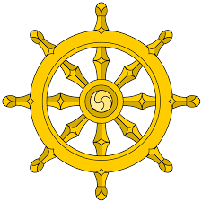

SAMURAJI
20. ožujka 2019.
Samuraji su bili vojska, plemićka vojnička kasta feudalnog Japana do revolucije 1868. godine. Nosili su daisho-dva mača tj. katanu i wakizashi. Slijedili su put bushida. Morali su počiniti Harakiri/samoubojstvo u slučaju da im je bila povrijeđena čast. Čast je bila centar života, koji im je bio posvećen obrani svog gospodara; bio to plemić, feudalac ili car osobno. Samuraj koji je izgubio gospodara ili koji ga nikada nije imao, a bio je samuraj zvao se ronin. Mnogi su ronini postali senseji (učitelji), banditi ili lutalice (komuso). Samuraji su jedini od svih stanovnika imali prezime i oružje.
ORUŽJA
21. ožujka 2019.

Vrste oružja:
- Yari: japansko koplje
- Tanto: kratki bodež
- Katana: dugi samurajski mač
- Wakizashi: kraći samurajski mač
- Naginata: mješavina koplja i mača
- Tessen: lepeza
- Yumi: luk
- Teppo: japanska mušketa
- Tachi: mač za konjanike
POJAVA SAMURAJA
22. ožujka 2019.
Prije Hiean razdoblja vojska Japana je uzimala za uzor kinesku vojsku, a cijela je vojska bila pod izravnim zapovjedništvom cara. Svatko (osim robova) sposoban za borbu morao je ući u vojsku. Takvi su se vojnici zvali Sakimori (防人) što je značilo "branitelji". Oni su možda bili ratnici, ali nisu bili povezani sa samurajima. U Hiean razdoblju car Kammu je odlučio pokoriti sjeverni Honshu, no njegova vojska je trebala više discipline. Zato je car osmislio novu vrstu ratnika zvanu Seiitaishogun (征夷大将軍). Car je nove vojnike koristio i pobjeđivao. Iako su bili pismeni i učeni, smatrani su okrutnim divljacima. Tokom Hiean razdoblja, carska se vojska ipak razišla i car je počeo gubiti moć. Moćni klanovi oko Kyota postali su ministri i povisili poreze. Mnogi su seljaci bili prisiljeni napustiti domove. Okružni su klanovi dobivali moć manjim porezima i naoružali se za obranu od moćnijih klanova koji su željeli prikupiti poreze. Samuraji su nastali od stražara carskog dvora i ratnika koje su unajmili klanovi da služe kao policija. Takvi su ratnici morali poboljšavati svoje borilačke vještine. Ubrzo su postali tip ratnika zvanih saburai (kasnije promijenjeno u samurai). Klanovi, udruženi da se obrane od moćnijih, ubrzo su osmislili karakterističan samurajski oklop i bushido.
PAD SAMURAJA
23. ožujka 2019.
Članovi Meiji vlade odlučili su unaprijediti Japan i ubrzo se uspostavila nova vojska zapadnog stila.Meiji reforme su se počele provoditi krajem 19. st. i po njima samuraji više nisu bili vladajuća klasa Japana. Mnogi su se samuraji dobrovoljno javili za pristup vojsci i postali časnici tako da je većina carske vojske bila sačinjena od samuraja. Kao takva nije imala problema pobijediti niz pobuna samuraja. Car je također pobijedio Sino-japanski rat (1894) i Rusko-japanski rat (1904). Samuraji su sve više prestajali ratovati jer su se zapošljavali kao reporteri, novinari, policajci itd. Kad je došao zakon o zabrani nošenja mačeva mnogi su se samuraji pobunili i okrenuli protiv cara. Car, koji je imao veću vatrenu moć, bez problema je porazio pobunjene samuraje koji su uskoro prestali postojati.
KULTURA
24. ožujka 2019.
Obrazovanje
Samuraji su morali znati čitati, pisati i znati nešto matematike. U slobodno vrijeme bavili su se plesom te proučavali razne literature, poeziju i uzgajali, proučavali i pili topli napitak od blijke čaj.
Način života
Siromašni samuraji su radili lakše poslove, a oni bogatiji su vladali nad trgovcima, seljacima itd. Samuraji su, ipak, bili vrlo poštovani u feudalnom Japanu i imali pravo ubiti osobu koja im se drsko obratila ili ih napala (iako su se tim pravom rijetko koristili).
RELIGIJA
25. ožujka 2019.

Većina samuraja je bila budističke i šintoističke vjere, no neki su se obratili rimokatoličkoj vjeri.
O meni:

Ime mi je Lovro Košir.
Imam 17 godina i polazim 3. razred Tehničke
škole Čakovec, smjer Računalni tehničar.
Živim u Čakovcu u Ulici 17. rujna 1991., br.8.
U slobodno vrijeme crtam, idem
u teretanu i bavim se karateom. Imam crni
pojas i 1.DAN majstorskog zvanja.(crni pojas-1.DAN)
Zapratite me!!!
Facebook: Lovro Košir Instagram: kosir.lovro008